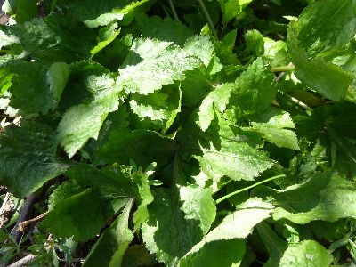
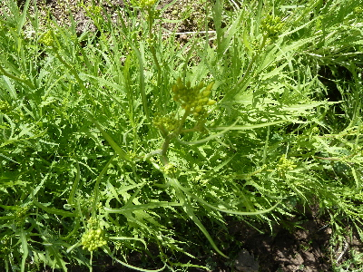
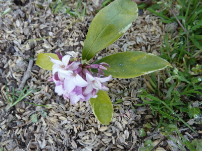
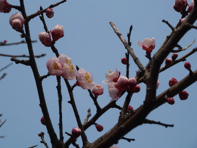

遊びで植物を育てよう
2016/03/21
三つ葉の収獲が始まりました。
今年は暖かいから収穫が早いです。

終わりも早いのかな？
【3月TOP】
【日記TOP】
【園芸TOP】
2016/03/21
水菜に花が咲いたのでもう終わりです。
太い茎に花が付きました。

だいぶ固くなりましたね。
今日まとめて残ってた水菜を収穫しました。
【3月TOP】
【日記TOP】
【園芸TOP】
2016/03/21
去年挿し木したジンチョウゲです。
あんまり育ってはいませんが、花が咲きました。

栄養が花にいってよけいに育たない気がしますが、可愛いからいいかな。
【3月TOP】
【日記TOP】
【園芸TOP】
2016/03/06
紅梅が咲き出しました。
白い梅は以前から咲いていましたが、赤い梅も咲き出しました。
（我が家の場合）

今は紅白がそろって咲いてていい感じです。
【3月TOP】
【日記TOP】
【園芸TOP】
過去の日記
【2024年4月の日記】
【2023年3月の日記】
【2022年3月の日記】
【2021年3月の日記】
【2020年3月の日記】
【2019年3月の日記】
【2018年3月の日記】
【2017年3月の日記】
【2016年3月の日記】
【2015年3月の日記】
【2014年3月の日記】
【2013年3月の日記】
【3月TOP】
【日記TOP】
【園芸TOP】
畑仕事じゃないよ。
【おいしいものを食べよう。】【たくさん寝よう。】
【ソロ活をしよう!】【季節感のあることをしよう。】【動画視聴はほどほどに。】【当サイトの全てのコンテンツは無断転載禁止です。】